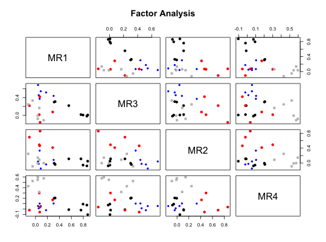
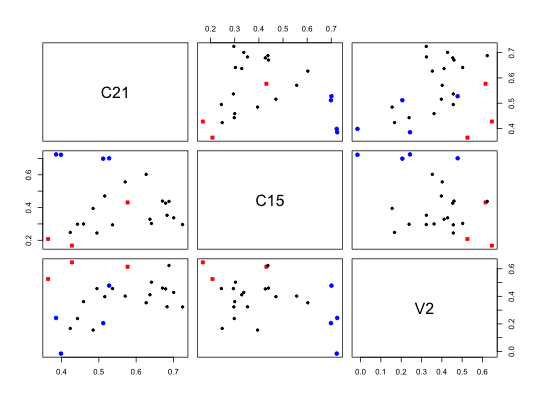

Combines several plotting functions into one for objects of class ``psych". This can be used to plot the results of fa, irt.fa, VSS, ICLUST, omega, factor.pa, or principal.
# S3 method for psych plot(x,labels=NULL,...) # S3 method for irt plot(x,xlab,ylab,main,D,type=c("ICC","IIC","test"),cut=.3,labels=NULL, keys=NULL, xlim,ylim,y2lab,lncol="black",...) # S3 method for poly plot(x,D,xlab,ylab,xlim,ylim,main,type=c("ICC","IIC","test"),cut=.3,labels, keys=NULL,y2lab,lncol="black",...) # S3 method for residuals plot(x,main,type=c("qq","chi","hist","cor"),std, bad=4, numbers=TRUE, upper=FALSE,diag=FALSE,...)
| x | The object to plot |
|---|---|
| labels | Variable labels |
| xlab | Label for the x axis -- defaults to Latent Trait |
| ylab | Label for the y axis |
| xlim | The limits for the x axis |
| ylim | Specify the limits for the y axis |
| main | Main title for graph |
| type | "ICC" plots items, "IIC" plots item information, "test" plots test information, defaults to IIC.,"qq" does a quantile plot,"chi" plots chi square distributions,"hist" shows the histogram,"cor" does a corPlot of the residuals. |
| D | The discrimination parameter |
| cut | Only plot item responses with discrimiantion greater than cut |
| keys | Used in plotting irt results from irt.fa. |
| y2lab | ylab for test reliability, defaults to "reliability" |
| bad | label the most 1.. bad items in residuals |
| numbers | if using the cor option in plot residuals, show the numeric values |
| upper | if using the cor option in plot residuals, show the upper off diagonal values |
| diag | if using the cor option in plot residuals, show the diagonal values |
| std | Standardize the resduals? |
| lncol | The color of the lines in the IRT plots. Defaults to all being black, but it is possible to specify lncol as a vector of colors to be used. |
| ... | other calls to plot |
Passes the appropriate values to plot. For plotting the results of irt.fa, there are three options: type = "IIC" (default) will plot the item characteristic respone function. type = "IIC" will plot the item information function, and type= "test" will plot the test information function.
Note that plotting an irt result will call either plot.irt or plot.poly depending upon the type of data that were used in the original irt.fa call.
These are calls to the generic plot function that are intercepted for objects of type "psych". More precise plotting control is available in the separate plot functions. plot may be used for psych objects returned from fa, irt.fa, ICLUST, omega, as well as principal
A "jiggle" parameter is available in the fa.plot function (called from plot.psych when the type is a factor or cluster. If jiggle=TRUE, then the points are jittered slightly (controlled by amount) before plotting. This option is useful when plotting items with identical factor loadings (e.g., when comparing hypothetical models).
Objects from irt.fa are plotted according to "type" (Item informations, item characteristics, or test information). In addition, plots for selected items may be done if using the keys matrix. Plots of irt information return three invisible objects, a summary of information for each item at levels of the trait, the average area under the curve (the average information) for each item as well as where the item is most informative.
If plotting multiple factor solutions in plot.poly, then main can be a vector of names, one for each factor. The default is to give main + the factor number.
It is also possible to create irt like plots based upon just a scoring key and item difficulties, or from a factor analysis and item difficulties. These are not true IRT type analyses, in that the parameters are not estimated from the data, but are rather indications of item location and discrimination for arbitrary sets of items. To do this, find irt.stats.like and then plot the results.
plot.residuals allows the user to graphically examine the residuals of models formed by fa, irt.fa, omega, as well as principal and display them in a number of ways. "qq" will show quantiles of standardized or unstandardized residuals, "chi" will show quantiles of the squared standardized or unstandardized residuals plotted against the expected chi square values, "hist" will draw the histogram of the raw or standardized residuals, and "cor" will show a corPlot of the residual correlations.
Graphic output for factor analysis, cluster analysis and item response analysis.
More precise plotting control is available in the separate plot functions.
VSS.plot and fa.plot, cluster.plot, fa, irt.fa, VSS, ICLUST, omega, or principal
plot(resid(f4))plot(resid(f4),main="Residuals from a 4 factor solution",qq=FALSE)#> Warning: "qq" is not a graphical parameter#not run #data(bfi) #e.irt <- irt.fa(bfi[11:15]) #just the extraversion items #plot(e.irt) #the information curves # ic <- iclust(test.data,3) #shows hierarchical structureplot(ic) #plots loadings#> Use ICLUST.diagram to see the hierarchical structure#